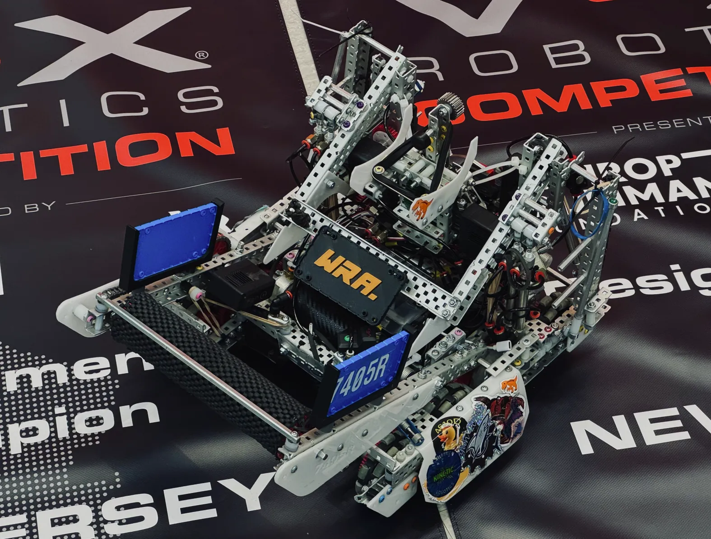

No. 01
Old Man of the Woods
Strobilomyces sp.
Sep 6 · 10:52 · 548 m
43.26 N 74.55 W

Engineering7405R · Over Under · 2023–24
OutdoorsCanada Lake · Sept 2026
Portfolio · Class of 2027
Cross Section
I build robots and machines, and I spend as much time outdoors as I can. This portfolio is a cross section through both. Drag the section line to cut between them.
VEX team 7405R, four seasons: design & build · driver · notebook & strategy
Part I · Engineering
Four seasons on Millburn High School's VEX robotics team. Every season brings a new game and a robot built from scratch to play it. I design and build, drive in matches, and work on the engineering notebook and strategy.
2023–24 · Freshman season
Robots push triballs into goals and over a barrier that splits the field, then climb an elevation bar to finish the match. In my first season we won the New Jersey State Championship and its Design Award, and reached the division semifinals at Worlds.
2024–25 · Sophomore season
Robots score rings onto stakes, carry mobile goals into the corners, and climb a ladder at the end. We won the Excellence Award at the Wave at WPI Signature Event, won the New Jersey State Championship again, and reached the Opportunity Division finals at Worlds.
2025–26 · Push Back
Our strongest year: Excellence Awards at a Signature Event and the U.S. Open, a state title with the Design Award, a top-five world skills score, and the Innovate Award at Worlds.
2025–26 · Push Back
Push Back is played with 88 blocks on a 12-by-12-foot field. Alliances score blocks in two long goals and two center goals, and controlling a goal earns points on top of the blocks inside it. Our robot routes blocks along curved polycarbonate guides up to scoring height.
CREATE U.S. Open · Council Bluffs, Iowa · March 2026
The Excellence Award is the top award at a VEX event. Judges weigh the engineering notebook, the team interview, qualification rankings, and skills scores together. We won it at the U.S. Open, in a field of about 140 high school teams, a few days after we won our state championship.
VEX Robotics World Championship · St. Louis · April 2026
Our third World Championship in a row. Judges gave us the Innovate Award, which recognizes a creative engineering solution that the team documents in its notebook, and we reached the division finals for the second straight year.
2026–27 · Senior season · In progress
This year's game is played with pins and cups. The photo shows an early build and the renders show the CAD design: a compact omni-wheel base, twin towers carrying a chain-driven lift, and a roller intake at the front.
Personal build
I designed this kart and welded the frame myself from square steel tube, then built the rest of it onto that frame: engine mount, steering, brake, seat, and pedals.
Personal build · Six years
I got a stock Ender 3 Pro for my 13th birthday and have been rebuilding it ever since. Almost every upgrade on it is a part I designed or printed myself. It is the tool behind nearly everything else in this portfolio: I can draw a part, print it that night, and test it the next morning.
Diamond Challenge · Team project
A wearable patch sensor that tracks strain on an athlete's muscle group during rehabilitation, built for our Diamond Challenge pitch. This is one of the early prototypes: the electronics sealed in a printed enclosure small enough to wear.
Personal project · Adaptive sports
Most prosthetics are designed only for daily life. I wanted to build an affordable arm for mountain biking. Two air-regulated pneumatic pistons hold the pressure the elbow needs for steering and soak up shocks on rough trail, between 3D printed joints.
Part II · Outdoors
A cut log is a cross section you can read: one ring for every year of growth. This one, in the southern Adirondacks, is rotting from the center, with a cluster of scaly Pholiota fruiting from the decay.
Every photo in this part is labeled with the time, elevation, and position its camera recorded. Positions are rounded to about a kilometer.
Field notes · Sept 5–6, 2026
Fungi from two days on trails in the southern Adirondacks, between 483 and 612 meters. Identifications are by eye from photos.
cf. marks a tentative identification. sp. means the genus is certain and the species is not.
No. 01
Strobilomyces sp.
Sep 6 · 10:52 · 548 m
43.26 N 74.55 W
No. 02
Amanita muscaria var. guessowii
Sep 5 · 14:27 · 483 m
43.18 N 74.50 W
No. 03
cf. Amanita fulva
Sep 6 · 13:50 · 535 m
43.25 N 74.54 W
No. 04
Pholiota sp.
Sep 5 · 13:49 · 612 m
43.18 N 74.48 W
Field notes · Caroga, NY
Last light from the kayak, with the rod rigged and the net strapped to the deck. Canada Lake sits at about 1,550 feet in the southern Adirondacks.
Field notes · Catskills, NY
A bass at sunset from the boat, the night before the Fourth of July.
Film
Match footage, recaps, and reveal videos from four seasons. The skills video is mine; the others are credited to the people who made them. YouTube links open in a new tab.
About
Senior at Millburn High School in New Jersey, Class of 2027. I've been on VEX team 7405R for all four of my high school seasons, where I design and build, drive, and work on the engineering notebook and strategy. On my own I build things like the go-kart, a prosthetic arm for mountain biking, and most of my own 3D printer. The rest of the time I'm in the Adirondacks or the Catskills, hiking, kayaking, fishing, and photographing what grows on the forest floor.
Every spring, VEX releases a new game for the V5 Robotics Competition, and teams spend the next year designing, building, and programming a robot to play it. The robot has to fit inside an 18-inch cube at the start of each match.
Matches are played two against two on a 12-by-12-foot field: a 15-second autonomous period run entirely by code, then 1 minute 45 seconds of driver control. Teams also run robot skills, where one robot plays alone for a minute, once driven and once fully autonomous, and the two scores are added together.
Judged awards like Design and Excellence look at the engineering notebook, an interview with the team, and how the robot performs.
Design and build. I design and build mechanisms and work on the robot as a whole, and keep rebuilding as the season changes what the robot needs.
Driving. I drive in matches.
Notebook and strategy. I work on the engineering notebook, the record of our design decisions that judges read, and on match strategy.
| Season | Game | Result |
|---|---|---|
| 2023–24 | Over Under | New Jersey State Champion and Design Award; World Championship, Dallas: division semifinals |
| 2024–25 | High Stakes | Excellence Award, Wave at WPI Signature Event; New Jersey State Champion; World Championship, Dallas: Opportunity Division finals |
| 2025–26 | Push Back | Excellence Award at the Wave at WPI Signature Event and at the CREATE U.S. Open; New Jersey State Champion and Design Award; 198 official skills, 5th in the world; World Championship, St. Louis: Innovate Award and Division Finalist |
| 2026–27 | Override | In progress |
Over Under was the 2023–24 game. Robots push triballs into their alliance's goal and over a barrier that splits the field, and at the end of the match they climb an elevation bar. The higher a robot climbs, the more it scores.
New Jersey State Championship: Tournament Champion and Design Award.
VEX Robotics World Championship, Dallas, April 25–27, 2024: division semifinals.
My freshman season on the team: design and build, driving, and the engineering notebook and strategy.
High Stakes was the 2024–25 game. Robots score rings onto stakes, including mobile goals they can pick up and carry into the corners, and climb a ladder in the middle of the field to finish.
Wave at WPI Signature Event: Excellence Award.
New Jersey State Championship: Tournament Champion, our second state title in a row.
VEX Robotics World Championship, Dallas, 2025: Opportunity Division finals.
Push Back is played on a 12-by-12-foot field with 88 blocks. There are two long goals and two center goals, one upper and one lower. Each block in a goal is worth 3 points. On top of that, an alliance earns 10 points for each zone of a long goal it controls, 8 for controlling the upper center goal, and 6 for the lower one.
At the end of the match, parking in your alliance's park zone is worth 8 points for one robot or 30 for both. The alliance that scores more during the 15-second autonomous period gets a 10-point bonus.
The robot routes blocks along curved polycarbonate guides up to scoring height; you can see those guides on the robot in the awards photo on sheet 06, and in the CAD model on this sheet.
The two clips on this sheet show a long-goal scoring test at home late on April 2, 2026, and a practice cycle on a full field.
Design and build, driving, and the engineering notebook and match strategy.
| Date | Event | Result |
|---|---|---|
| Dec 2025 | Wave at WPI Signature Event, Worcester, MA (80 teams) | Excellence Award, Finalist |
| Dec 2025 | Millburn VEX Tournament (63 teams) | Tournament Champion |
| Jan 18, 2026 | Official robot skills | 198 (102 driver, 96 programming), 5th in the world |
| Feb 2026 | Valentine's Vextravaganza | Tournament Champion |
| Mar 13–14, 2026 | New Jersey State Championship, NJIT, Newark | Tournament Champion, Design Award |
| Mar 16–18, 2026 | CREATE U.S. Open, Council Bluffs, IA | Excellence Award (Domestic), Skills 3rd, Division Finalist |
| Apr 21–24, 2026 | VEX Robotics World Championship, St. Louis | Innovate Award, Division Finalist |
The Excellence Award at the Wave at WPI Signature Event in December qualified us for the World Championship. In January our official skills score of 198 was 5th in the world. In March we won the New Jersey State Championship and its Design Award at NJIT, then won Excellence again at the CREATE U.S. Open in Iowa a few days later. At the World Championship in April we won the Innovate Award and finished as Division Finalists.
The Excellence Award is the highest award at a VEX event. To be considered, a team has to rank near the top in qualification matches and in robot skills, and the judges weigh its engineering notebook and its interview. The CREATE U.S. Open gives one to a domestic team and one to an international team. We won the domestic award.
We finished 3rd in robot skills. In eliminations we captained the No. 3 seed alliance, with 95071Y from Saratoga, California. The alliance won its first three elimination matches, then won a division final match 70–14 on the field before a referee call against the alliance overturned it. Both teams appealed, the call stood, and we left with the Division Finalist award along with Excellence.
Two days before the U.S. Open started, we had won the New Jersey State Championship and its Design Award.
Building, driving, and the engineering notebook the judges read.
The Innovate Award goes to a team whose robot shows a creative, well-engineered solution to a design problem in the game, documented in the team's engineering notebook. We won it at the 2026 VEX Robotics World Championship in St. Louis, April 21–24.
We reached the division finals for the second year in a row and left with the Division Finalist trophy.
2024 in Dallas: division semifinals. 2025 in Dallas: Opportunity Division finals. 2026 in St. Louis: Innovate Award and division finals.
Override is the 2026–27 VEX V5 Robotics Competition game. Its game objects include pins and cups, and both are on the field in the photo.
The photo shows an early version of our robot, and the two renders show its CAD model: a compact base on omni wheels, two tall towers carrying a chain-driven lift, and a roller intake at the front. The brain is mounted on the side of the robot. This sheet will change as the season goes.
Design and build, driving, and the engineering notebook and strategy, in my fourth season on the team.
I designed this kart and welded the frame myself from square steel tube. Then I built everything else onto it: the engine mount, the steering column and tie rods, the brake, the seat, and the pedals.
| Frame | Square steel tube, designed and welded by me |
| Engine | Four-stroke, rear-mounted, with a separate fuel tank |
| Steering | Steering column with tie rods to the front spindles |
| Brake | Disc brake on the rear axle |
| Wheels | Racing slicks on aluminum rims |
| Finish | Red paint over bare steel |
I got a stock Ender 3 Pro for my 13th birthday. Over the six years since, I have modified almost every part of it, and most of the replacement parts were designed and printed on the machine itself to keep costs down.
| Motors | Upgraded stepper motors |
| Extrusion | Upgraded extruder and nozzle |
| Cooling | Two fans and a redesigned printed duct for better airflow |
| Motion | Upgraded rails, kept lubricated |
| Firmware | My own Klipper configuration, with prints monitored and tracked online |
School has printers, but this one is mine. It is where I go from a quick design to a physical prototype the same day, and it printed the parts for the MyoSense enclosure, the prosthetic arm, and many other projects.
MyoSense is a wearable patch sensor that tracks strain on a muscle group, so athletes and trainers can monitor how hard a muscle is working during rehabilitation. It was our team's product for the Diamond Challenge pitch competition.
The photos show one of the early prototypes: the electronics sealed inside a compact 3D printed enclosure with a four-screw closure and a raised MYOSENSE logo.
The prosthetic market mostly targets day-to-day life. Riders who want to mountain bike need an arm that can steer, hold on, and take hits from the trail, and those are expensive or don't exist. I set out to build an affordable one.
Pneumatic damping. Two air-regulated pistons span the elbow. Setting the air pressure tunes how stiff the arm is for steering and how much shock it absorbs on rough terrain.
Breakaway claw. The universal claw is printed to a tolerance that holds during riding but clips off when the arm is twisted past a safe angle, in a crash or fall, so the force doesn't go into the rider's body.
Socket. The cone shown is a placeholder for where the residual limb would sit. A real socket would be custom-fit to each rider.
The joints, brackets, and socket are 3D printed on my own printer, with off-the-shelf pneumatic cylinders, valves, and fittings. This was a passion project.
A cut log is a cross section you can read: each ring is a year of growth. This one, in the southern Adirondacks, is decaying from the center outward. The orange cluster is a scaly Pholiota, a wood-decay fungus fruiting from the softened heartwood, and the pale tiers lower down are a second fungus working on the same log.
Each photo in the outdoors section is labeled with the date, time, elevation, and position its camera recorded. Positions are rounded to two decimal places, which is about a kilometer.
Found on September 5 and 6, 2026, between 483 and 612 meters in the southern Adirondacks. Identifications are by eye from photos. cf. means "compare with" and marks a tentative ID; sp. means the genus is known and the species is not.
Strobilomyces sp. A shaggy gray-and-black cap that looks like a pinecone from above. It's a bolete, so it has pores instead of gills.
Amanita muscaria var. guessowii. The eastern North American form of the fly agaric: a yellow cap with white warts. Poisonous.
cf. Amanita fulva. A slender amanita with an orange-brown cap and a grooved margin, growing beside a spruce seedling.
Pholiota sp. Clustered caps covered in upturned scales, on the same decaying log as sheet 13.
Canada Lake is in the town of Caroga, in Fulton County, in the southern Adirondacks, at about 1,550 feet. This was taken from the kayak at 7:20 PM on September 5, 2026, with the rod rigged and the net strapped to the deck.